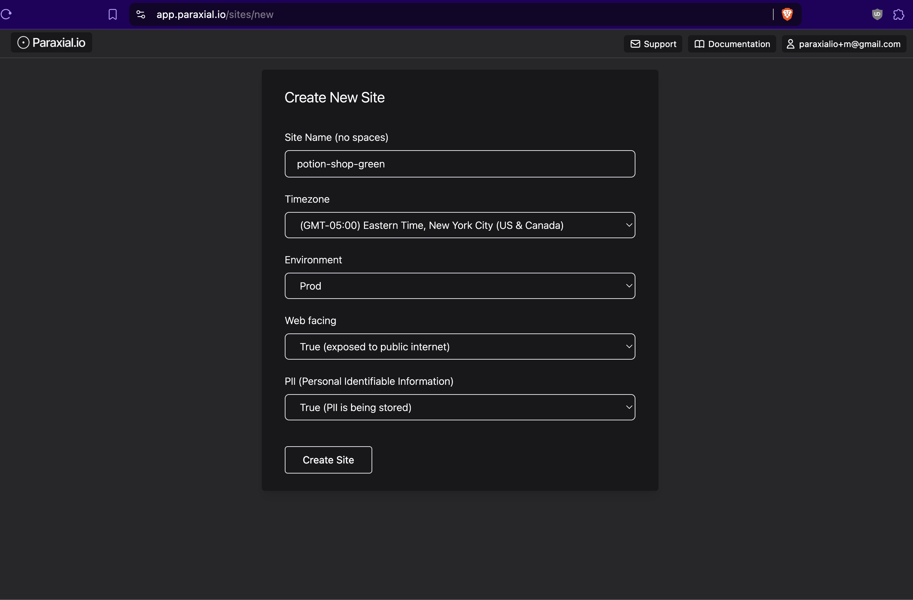
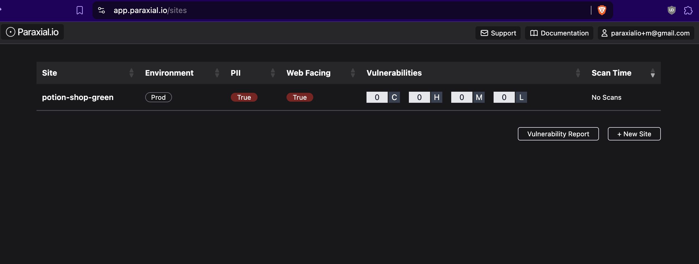

Getting Started with Paraxial.io for Elixir
This guide will walk you through setup for Paraxial.io. Most features require a paid account. If you are on the free tier, email support@paraxial.io to request a 2 week free trial.
Application Secure
- Asset management - A full inventory of all your Elixir projects
- Network Scans - Determine which ports are open on your web server
- Code Scans - Source code (SAST) and dependency (SCA) scanning
- GitHub or GitLab App - Get security feedback in your pull request
- License Scans - Determine which open source licenses are in use
- App Audit - A runtime inventory of all your dependency versions
- Exploit Guard - runtime detection of deserialization exploits
Bot Defense
- Ingesting HTTP traffic
- Rate limiting - Ban IPs that do too many login attempts
- Honeypots - Ban IPs that submit a fake form
- Blocking data center/cloud IP attacks
- Banning bots scanning for
.phproutes
Sign Up, Create Your First Site
Create your account here - https://app.paraxial.io/users/register
Confirm your email and create your first site:

Site Name - Cannot contain spaces.
Timezone - Select the timezone where you are located
Environment - Where is this application deployed? You should create one site for each environment.
Web facing - Does this application face the public internet? This is a label set by the account owner, not detected by the agent.
PII (Personal Identifiable Information) - Does this application handle sensitive user data? This is a label set by the account owner, Paraxial.io cannot access PII.
Asset Management
Now that your site is created you can get a better sense of how Asset Management Works:

This view displayed:
- Each site you have created
- The environment, PII, and Web Facing values
- The current vulnerabilities (via code scans)
- When the last code scan took place
The foundation of a security program is understanding what assets need to be protected. With this view, you can quickly get a sense of what security controls are currently active across your organization.
Network Scans
Before starting with network scans, determine if your application is hosted on a server where you control which ports are exposed to the public internet, or a Platform as a Service (PaaS).
PaaS: Heroku, Gigalixir, Render, Fly.io, Railway
VPS: AWS, GCP, Hetzner, Azure, Digital Ocean
If your hosting provider is in the "PaaS" group, network scanning is not applicable to your application, because you don't have access to the host operating system and network configuration. If you are on a VPS, then using network scanning is recommended. See the documentation page for Network Scans to start.
Code Scans
There are three popular security tools for ensuring the security of Phoenix applications:
Sobelow, for static analysis of source code for vulnerabilities, https://github.com/nccgroup/sobelowdeps.audit, to scan a project's dependencies for vulnerabilities, https://github.com/mirego/mix_audithex.audit, to scan for dependencies that have been marked as retired, https://hexdocs.pm/hex/Mix.Tasks.Hex.Audit.html
It may seem straightforward to integrate these tools into your existing CI/CD pipeline, but consider the following questions:
- When was the last time the scan ran successfully?
- Do you have a record of when all these scans happened?
- Did the numbers of vulnerabilities increase or decrease compared to the previous scans?
- How do you view the findings of the most recent scan? Of a scan from 3 months ago?
With the Paraxial.io agent, you now have access to the command:
mix paraxial.scan
This will run Sobelow, deps.audit, and hex.audit on your application, then upload the results to the Paraxial.io backend, so you have a detailed record for compliance audits (SOC 2, HIPAA, ISO).
Install the Paraxial.io Agent in Your Project
Now it is time to install the Paraxial.io agent. The agent is written in Elixir, and installed as a Hex dependency - https://hex.pm/packages/paraxial
mix.exs
{:paraxial, "~> 2.8.4"}
mix deps.get
The package is installed as a normal Elixir dependency. Once you confirm the install was successful, go to your site in the web interface of app.paraxial.io -> Site Settings -> Site API Key.
With the private API key, configure your project:
config/dev.exs
config :paraxial,
paraxial_api_key: System.get_env("PARAXIAL_API_KEY")
Then in your terminal:
% export PARAXIAL_API_KEY=your_secret_here
% mix deps.compile
% mix paraxial.scan
11:49:15.586 [info] [Paraxial] v2.8.3, scan starting
11:49:15.587 [info] [Paraxial] API key found, scan results will be uploaded
...
11:49:17.619 [info] [Paraxial] Scan written successfully. UUID bbef9230-8d31-4bba-8148-91358a3207f9
For information about how to use a Sobelow configuration file, ignore findings, and an FAQ, see the Code Scans documentation.
GitHub or GitLab App
Developers in your organization can run mix paraxial.scan locally to ensure their code does not have any security problems before opening a pull request. This is beneficial because CI/CD takes several minutes to run, while the mix command takes only a few seconds.
A good practice is to scan each new pull request in your organization for security issues. Paraxial.io has a GitHub and GitLab app which does the following:
- Create a comment on each new pull request highlighting any security issues
- Ranks the issues by severity (remote code execution and SQL injection are critical, for example)
- Provides developers with detailed instructions on how to verify and fix the problem
The GitHub/GitLab App runs in CI, so these security checks will be part of your team's everyday workflow. For information about getting setup, see the GitHub App or GitLab App page.
License Scans and App Audit
When you ran mix paraxial.scan, which is a compile time operation, an inventory of all your dependencies, the version of each, and their open source license is sent to the Paraxial.io backend.
The App Audit feature is similar, in that it also generates a list of all the dependencies, the difference is:
License Scan - Compile time, dependency versions, with license information
App Audit - Runtime, dependency versions
Why this redundancy? Sometimes the dependencies specified in mix.lock do not match what is actually deployed in production. In a scenario where there is a major vulnerability in a core library such as plug, cowboy, or phoenix, it is a good idea to use App Audit.
Consider CVE-2025-32433, an Unauthenticated Remote Code Execution in Erlang/OTP SSH. When CVE-2025-32433 was announced Paraxial.io customers were able to use App Audit to determine if the Erlang SSH library was running in their application, and Network Scans to determine if the service was exposed via an open port to the public internet.
To get App Audit data for your current site, start your application with a valid Paraxial API key:
@ potion_shop % mix phx.server
[info] [Paraxial] v2.8.3 URL and API key found. Agent will be started
...
[info] Running CarafeWeb.Endpoint with cowboy 2.13.0 at 127.0.0.1:4000 (http)
[info] Access CarafeWeb.Endpoint at http://localhost:4000
...
[info] [Paraxial] App Audit upload success
Exploit Guard
Exploit Guard provides runtime application self protection for your application. To use Exploit Guard, ensure your agent version is >= 2.4.0.
Exploit Guard has two configurations, :monitor or :block
monitor - No action will be taken, this is the "read only" option.
block - The process where the new function was created will be killed.
When Exploit Guard detects a new function is created at runtime, an alert will be sent to your Paraxial.io site. If you have a webhook configured, a POST request will be sent.
Example:
config :paraxial,
paraxial_api_key: System.get_env("PARAXIAL_API_KEY"),
exploit_guard: :monitor # This value can be :monitor or :block
To trigger an Exploit Guard event for testing, start your application with:
@ potion_shop % iex -S mix
...
[info] [Paraxial] Exploit Guard set to monitor mode
[info] [Paraxial] App Audit upload success
iex(2)> a = :erlang.term_to_binary(fn x -> x end)
<<131, 112, 0, 0, 0, 161, 1, 201, 188, 156, 143, 16, 126, 173, 32, 90, 79, 205,
206, 160, 193, 177, 248, 0, 0, 0, 42, 0, 0, 0, 1, 119, 8, 101, 114, 108, 95,
101, 118, 97, 108, 97, 42, 98, 6, 77, 228, 228, 88, 119, ...>>
iex(3)> :erlang.binary_to_term(a)
#Function<42.105768164/1 in :erl_eval.expr/6>
[alert] [Paraxial] Exploit behavior detected, binary_to_term created function
[alert] [Paraxial] Exploit info:
13:15:19.168277 <0.478.0> erlang:binary_to_term(<<131,112,0,0,0,161,1,201, ...
[alert] [Paraxial] Monitor mode active, no action taken
[alert] [Paraxial] Exploit behavior detected, binary_to_term created function
[alert] [Paraxial] Exploit info:
13:15:19.177085 <0.478.0> erlang:binary_to_term/1 --> #Fun<erl_eval.42.105768164>
[alert] [Paraxial] Monitor mode active, no action taken
Visit Site > Exploit Guard to view the event.
The implementation of Exploit Guard is open source, see Exploit Guard: Open Source Runtime Application Self Protection for Elixir.
For more information on how RCE exploits work in Elixir, see the article Elixir/Phoenix Security: Remote Code Execution and Serialisation.
Application Secure End
This concludes the high level overview of Paraxial.io Application Secure. All the features specified above are included in your Application Secure Plan. Further Reading:
- Full list of all the flags
- How to ignore findings, including dependencies
- How to setup with an Umbrella application
Bot Defense
To get started with bot defense, click here.